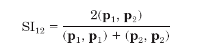
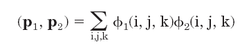
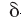
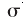
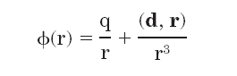
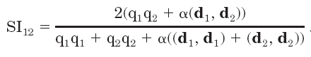
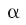
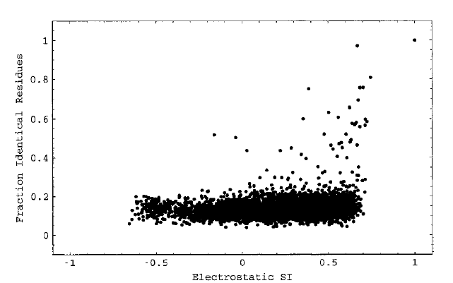

Short
Theoretical Introduction to PIPSA
(Protein Interaction Property Similarity
Analysis)
Detailed theory can be found in
publications
Blomberg etal, Proteins, 1998
and
Wade etal, Intl. J. Quant. Chem. 2001
.
Molecular electrostatic potentials can
be compared quantitatively by calculating similarity indices.
Similarity
indices have been developed for, and are usually applied to, the
comparison
of small molecules. They are, however, also useful for the analysis of
macromolecules, allowing classification as well as prediction of the
functional
properties and active sites of macromolecules. The Hodgkin index
is commonly used to measure the similarity of two molecular potentials.
It detects differences in sign, magnitude, and spatial behavior in the
potentials and is given by

where (p1, p2), (p1,
p1), and (p2, p2) are the scalar
products
of the electrostatic potentials over the region where the potentials
are
compared. Thus, SI12 = +1 if the two potentials are
identical;
SI12 = 0 if they are fully uncorrelated; SI12= -1
if they are anti-correlated.
If the electrostatic potentials  are computed on a three-dimensional grid over the two superimposed
molecules,
the scalar product is
are computed on a three-dimensional grid over the two superimposed
molecules,
the scalar product is

where the
summation
is carried out over the grid points (i, j, k) that are within the
region
of interest. The regions are usually chosen to represent a "skin"
around the molecules having thickness .
The "skin" of each molecule is defined as the volume remaining after
excluding
the region inside the surface accessible to the center of a probe with
radius ,
and the region outside the surface accessible to a probe of radius  .
The "region of interest" is the intersection of the "skins"
of the two molecules.
.
The "region of interest" is the intersection of the "skins"
of the two molecules.
The SI analysis can be performed for
the
complete molecular skins or restricted to particular chosen regions of
the skins, e.g. around a protein binding site. In the latter case, a
vector
can be chosen pointing from the center of the proteins to the region to
be studied. The figure shows a blue copper protein (the copper
ion
represented by a sphere) with the definition of the conical region,
where
the potentials are compared:
Instead of comparing protein electrostatic
potentials on a grid, SIs for electrostatic potentials can be computed
using a simple analytical expression accounting for monopole and dipole
terms:

then (so
called
"analytical") estimate of the electrostatic potential similarity index
for 2 molecules is:

with the
parameter depending
on the region, where the potentials should be compared.
Interaction field similarity measure is
not
correlated with the sequence conservation measure: large variety
of interaction fields can be observed in a set of homologous proteins,
as this can be seen from the comparison for all pairs of PH domain
models
of the electrostatic SI with the fraction of identical residues in each
pair of sequences:

Razif
Gabdoulline, 2007